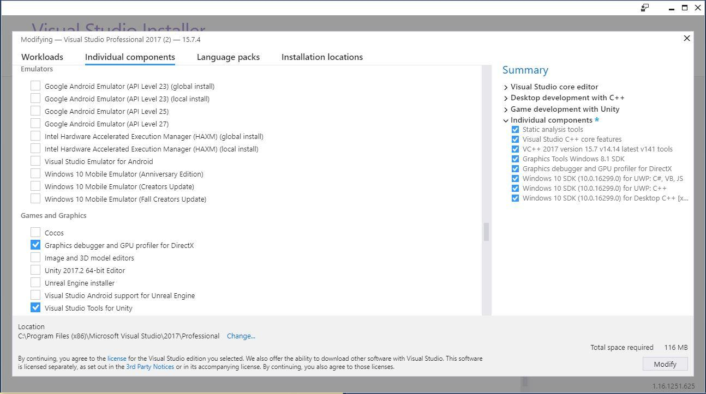
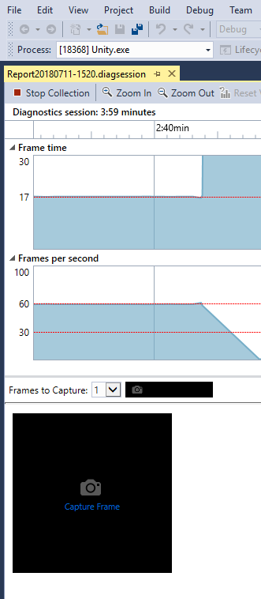

使用 Visual Studio 来调试 DirectX 11/12 着色器
使用 Microsoft Visual Studio（2012 版或更高版本）中的图形调试器从 Unity Editor、Windows 独立平台或通用 Windows 平台等平台捕获应用程序的各个帧以进行调试。
要安装 Visual Studio 中的图形调试器，请执行以下操作：
1.选择 Tools > Get Tools and Features 
2.在 Individual components 选项卡上，滚动到 Games and Graphics__，并选中 Graphics debugger and GPU profiler for DirectX__ 的复选框
3.单击 Modify
4.等待安装，然后按照说明重新启动计算机
使用 Visual Studio 来捕获 DirectX 着色器
应使用已构建的 Unity 应用程序版本来捕获帧，而不是使用 Unity Editor 中运行的版本。这是因为 Editor 可能同时打开多个子窗口，而图形调试器可能会从非预期窗口捕获帧。
从 Unity Editor 或 Windows 独立平台中捕获帧的步骤
要在这两个平台中的任何一个平台上使用图形调试器，您需要创建一个虚拟的 Visual Studio 项目：
1.启动 Visual Studio 2017
2.选择 File > New > Project > Visual C++ > Empty Project
3.选择 Project > Properties > Configuration Properties > Debugging
4.在 Command 字段中，将 $(TargetPath) 替换为 Unity Editor 或 Windows 独立平台的路径（例如 C:\MyApp\MyApp.exe）
5.如果要强制 Windows 独立平台或 Unity Editor 在 DirectX 11 下运行，请选择 Command Arguments 并输入 -force-d3d11。

6.选择 Debug > Graphics > Start Graphics Debugging
7.如果全部配置都正确无误，Unity 会在应用程序的左上角显示以下文本：

8.要捕获帧，请使用键盘上的 Print Screen 键，或单击 Visual Studio 界面左侧的 Capture Frame 框。 
使用 Visual Studio 来调试 DirectX 着色器
要调试着色器，必须使用调试符号进行编译。为此，需要插入 #pragma enable_d3d11_debug_symbols。
着色器应如下所示：
Shader "Custom/NewShader" {
Properties {
_MainTex ("Base (RGB)", 2D) = "white" {}
}
SubShader {
Tags { "RenderType"="Opaque" }
LOD 200
CGPROGRAM
#pragma surface surf Lambert
#pragma enable_d3d11_debug_symbols
sampler2D _MainTex;
struct Input {
float2 uv_MainTex;
};
void surf (Input IN, inout SurfaceOutput o) {
half4 c = tex2D (_MainTex, IN.uv_MainTex);
o.Albedo = c.rgb;
o.Alpha = c.a;
}
ENDCG
}
FallBack "Diffuse"
}
示例工作流程
让我们创建一个基本示例来展示整个过程：
1.创建新的 Unity 项目（请参阅准备开始文档）。
2.在顶部菜单中，选择 Assets > Create > Shader > Standard Surface Shader。此时将在 Project 文件夹中创建一个新的着色器文件。
3.选择着色器文件，然后在 Inspector 窗口中单击 Open。此时将在脚本编辑器中打开着色器文件。将 #pragma enable_d3d11_debug_symbols 插入到着色器代码中的其他 #pragma 行下面。
4.创建新的材质（菜单：__Assets__ > Create > __Material__）。
5.在 Material Inspector 窗口中，选择 Shader 下拉选单，选择 __Custom__，然后选择刚创建的着色器。
6.创建 3D 立方体游戏对象（菜单：__GameObject__ > 3D Object > __Cube__）。
7.将新材质分配给新的游戏对象。要执行此操作，请将材质从 Project 窗口拖到 3D 立方体上。
8.构建适用于 Windows 独立平台的项目。请注意，实际项目可能非常大，以至于每次要调试着色器时构建它们都会很低效；在这种情况下，请在 Editor 中进行调试，但要确保您的捕获已分析正确的窗口。
9.按照前面__使用 Visual Studio 来捕获 DirectX 着色器__部分描述的步骤捕获帧。
10.捕获的帧出现在 Visual Studio 中。右键单击该帧，然后选择 Pixel。

11.单击 Vertex Shader 旁边的 Play 按钮（以上截屏中圈出）。此时将打开顶点着色器文件：

在使用 DirectX 12 时存在一个已知问题导致 Play 按钮不可用，并显示以下错误：此绘制调用使用干扰像素历史记录计算的系统值语义 (This draw call uses system-value semantics that interfere with pixel history computation)。如果遇到此问题，请使用 PIX 来调试着色器。
通用 Windows 平台
在进行通用 Windows 平台的调试时，不需要创建虚拟 Visual Studio 项目，因为 Unity 会创建该项目。
捕获帧和开始进行着色器调试的步骤与 Unity Editor 或 Windows 独立平台的步骤相同。
备用着色器调试技术
还可以使用 RenderDoc 来调试着色器。在 RenderDoc 中，从 Editor 中捕获__场景__，然后使用独立平台工具进行调试。
PIX 的工作方式与 Visual Studio 的图形调试器相似。请使用 PIX 而不是图形调试器来调试 DirectX 12 项目。
- 2018–09–14 页面已发布